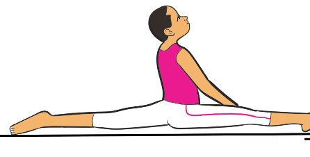
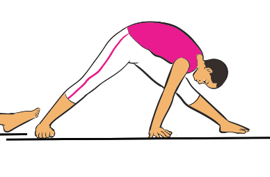
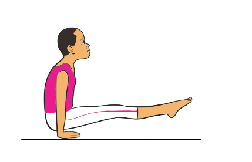
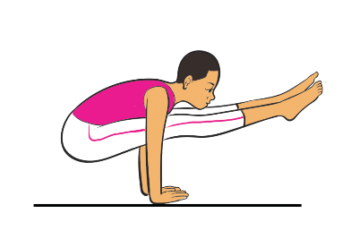

Figure 4.14: Split press to handstand
Equipment-based routines
Equipment-based routines are planned movements that gymnasts perform using special gym tools like the beam, bars, rings, or vault. Each routine shows the gymnast’s strength, balance, and skills on that equipment. The equipment based routines includes Griping, mounts, dismounts, Cast, swing, hangs, and holdings.
Gripping
Gripping refers to how a gymnast holds onto an apparatus. Proper gripping is crucial for control, safety, and performance in various skills and routines. The various types of grips include the neutral grip, false grip, and above-the-ring grip.
Neutral grip
A neutral grip is when the palms face each other while gripping an apparatus. This grip is commonly used on parallel bars, rings, rope climbing and in some conditioning exercises to provide a natural wrist position and greater stability. The following steps will help you practice a neutral grip on rings:
SPORTS STUDIES FORM TWO.indd 121
9/17/25 9:54 AM